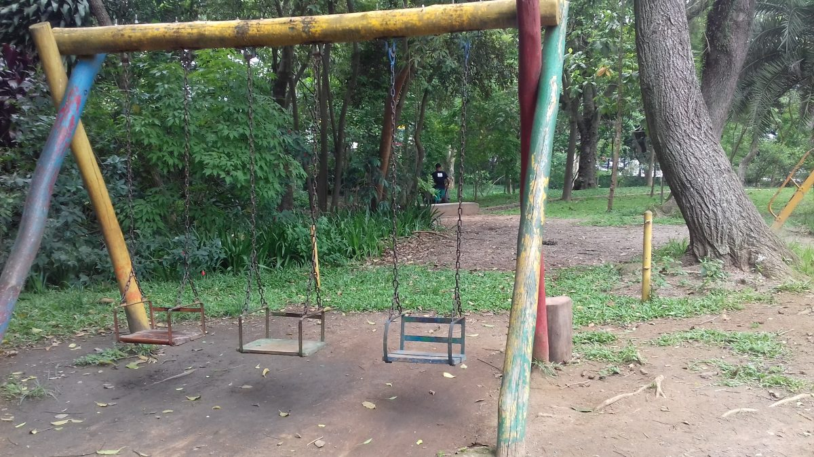

ONG do seu zézinho
Há duas horas
Amigos do Bem
Rua Feijão, 123
Crianças carentes sofrem com a fome em SP. Comunidade do capão redondo sofre com a pandemia
e isso
se reflete em seus moradores mais carentes. Precisamos de apoio no financiamento para a
compra de
alimentos e voluntariado para a sua distribuição. #fomenuncamais #juntossomosprimus

70 curtidas
Amigos do Bem
Há duas horas
Crianças carentes sofrem com a fome em SP.
Rua Raiz da Serra 182, São Paulo
Crianças carentes sofrem com a fome em SP. Comunidade do capão redondo sofre com a pandemia
e isso
se reflete em seus moradores mais carentes. Precisamos de apoio no financiamento para a
compra de
alimentos e voluntariado para a sua distribuição. #fomenuncamais #juntossomosprimus
70 curtidas

Steph Henrique
Há alguns minutos
Reformar parque público
Rua Lagoa de Esmoriz, 281
Preciso de ajuda para reformar um parque público aqui da rua, visto que muitas crianças não tem
onde brincar e na região próxima não possuímos um ambiente agradável de lazer.

70 curtidas

Ciranda do Saber
Há alguns minutos
Estudantes precisando livros e materiais escolares
Rua Dulce dos Santos 271, São Paulo
Estudantes da rede pública de ensino estão precisando de apoio no começo aos estudos.
Precisamos de
livros didáticos ou literários e de materiais de sala de aula, como lápis, caneta, hidrocor,
etc...
Por favor ajudem, é muito importante!
#escola #ajudar #primusHelp

70 curtidas

Companhia do agasalho
Há quatro horas
Moradores de rua passando fome e frio.
Rua Raiz da Serra 182, São Paulo
Eles estão precisando de apoio com comida e roupas de frio para se aquecerem, são cerca de
20
pessoas necessitadas. Toda ajuda é bem vinda. #ajudar #primusHelp #solidariedade

70 curtidas